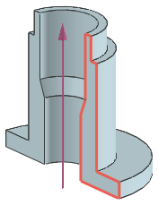

您用于创建模型的方法取决于部件的特性和形状，当然也需要考虑下游的用途。
如果您的部件中含有沿固定方向的恒定截面，那么您可以创建一个草图并拉伸，以生成模型，然后添加更多其它特征以完成模型。
如果您的部件中含有可绕某个轴旋转的恒定截面，那么您可以创建一个草图并回转以生成模型。

如果您的部件中含有沿某个路径移动的恒定截面，那么您可以创建一个草图，然后沿着路径扫掠草图然后添加更多其它特征以完成模型。